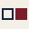

جدول
شیمیِ چیزهایی که هر روز باهاشون زندگی میکنیم.
- نام: «اسیدبازی» ← «جدول»؛ لاتین: JADVAL
- معنای نشانه: از «واکنش» به «خانهٔ پر / خانهٔ خالی» در جدول
- قطره و نوارِ pH حذف شدند؛ کاشیِ عنصر جایگزین شد
- «طیف»ها ← «گروه»ها (ستونهای جدول)
- وردمارک تکرنگ شد
- پالت رنگ، بدونِ تغییر
- تایپوگرافی: Estedad و Vazirmatn
- گرید، فاصلهها، شعاعِ صفر، بدونِ سایه
- قواعدِ راستبهچپ
- لحن و شخصیتِ برند
جوهرِ برند
اتفاقات معمولی زندگی، معمولاً یه داستان شیمیایی عجیب پشتشون دارن.
جدول یک برندِ رسانهای است، نه یک برندِ علمی-آموزشی. موضوع، شیمیِ پنهان در زندگیِ روزمره است؛ لحن، لحنِ یک دوستِ کنجکاو که شیمی میداند.
«جدول» اشاره به جدولِ تناوبی است؛ جایی که همهچیز، از قهوه تا باران، یک خانه دارد. اما مثلِ نامِ قبلی، این اشاره باید زیرپوستی بماند: جدول دربارهٔ عنصرها نیست، دربارهٔ زندگی است.
نشانه
نشانه از دو خانهٔ مجاورِ یک جدول ساخته شده: خانهٔ پُر (زرشکی) چیزی است که میدانیم؛ خانهٔ خالی (سرمهای، خطی) جایی است که مندلیف برای عنصرهای کشفنشده باز گذاشت. نشانه یعنی کنجکاوی: کنارِ هر چیزِ آشنا، یک سؤالِ بیجواب هست.
- خانهٔ پُر — راست
- وضعیتِ آشنا و روزمره
- خانهٔ خالی — چپ
- سؤالی که هنوز جوابش را نمیدانیم
- فاصله
- یکهشتمِ ضلعِ خانه
- ضخامتِ خط
- یکنهمِ ضلعِ خانه
ترتیبِ راستبهچپ مهم است: اول خانهٔ پُر خوانده میشود، بعد خانهٔ خالی. نشانه هرگز قرینه نمیشود.
قفلهای لوگو
وردمارک همیشه تکرنگ است (سرمهای روی کرم، کرم روی تیره). رنگِ تأکیدی فقط در خانهٔ پُرِ نشانه مینشیند.

در هر طرف = ضلعِ خانهٔ نشانه.
نشانه: ۱۲ پیکسل. زیرِ ۱۶ پیکسل، ضخامتِ خطِ خانهٔ خالی حداقل ۲ پیکسل میماند.
رنگ
#F4F0E6زمینهٔ اصلی#E7E2D5زمینهٔ ثانویه#16243Cتأکیدِ اول، خانهٔ خالی#7A1E2Bتأکیدِ دوم، خانهٔ پُر#111111متنِ اصلیهر ترکیب حداکثر دو رنگِ برند بههمراه زمینه دارد. سرمهای و زرشکی هرگز دو سطحِ بزرگِ کنارِ هم نیستند. طیفِ رنگیِ pH دیگر جزوِ زبانِ برند نیست؛ سبز، فیروزهای، زرد، نارنجی، صورتی و بنفش مجاز نیستند.
تایپوگرافی
شیمیِ زندگیِ روزمره
آ ب پ ت ث ج چ ح خ د ذ ر ز ژ س ش ص ض ط ظ ع غ ف ق ک گ ل م ن و ه ی ۰۱۲۳۴۵۶۷۸۹
وقتی پیاز را میبُری، سلولها پاره میشوند و آنزیمی آزاد میشود که ترکیبی فرّار میسازد؛ همان چیزی که چند ثانیه بعد به چشم میرسد و اشک را راه میاندازد.
MONO — IBM PLEX MONO 500/600 (LATIN ONLY)EP 01 — On — 26:04
| توکن | نمونه | فونت / وزن | دسکتاپ | موبایل |
|---|---|---|---|---|
display | جدول | Estedad 900 | 96 / 1.05 | 48 / 1.1 |
h1 | تیترِ اصلی صفحه | Estedad 900 | 64 / 1.2 | 36 / 1.25 |
h2 | عنوانِ بخش | Estedad 800 | 44 / 1.25 | 28 / 1.3 |
episode-title | پیاز چرا اشکمون رو درمیاره؟ | Estedad 900 | 32 / 1.35 | 22 / 1.4 |
body | متنِ اصلی، خوانا در طولهای بلند. | Vazirmatn 400 | 18 / 1.9 | 16 / 1.85 |
tile-symbol | On | IBM Plex Mono 700 | 34% of tile | 34% of tile |
meta | IBM Plex Mono 500 | 12 / .14em | 11 / .14em | |
button | اپیزودها را ببین | Vazirmatn 700 | 16 / 1 | 16 / 1 |
گرید و فاصله
۱۲ ستون / فاصله ۲۴ / حاشیه ۴۰
۸ ستون / فاصله ۲۰ / حاشیه ۳۲
۴ ستون / فاصله ۱۶ / حاشیه ۲۰
شعاعِ گوشه در تمامِ سیستم صفر است. سایه استفاده نمیشود؛ سطحها با خطِ ۲ پیکسلیِ سرمهای جدا میشوند.
زبانِ گرافیکی
- شمارهٔ اپیزود (بالا-راست) — مثلِ عددِ اتمی؛ دو رقم، لاتین.
- شمارهٔ ستون (بالا-چپ) — گروهِ موضوعی؛ فارسی.
- نماد — دو حرفِ لاتین، حرفِ اول بزرگ، ۳۴٪ عرضِ کاشی.
- نام — نامِ گروه یا شیء؛ Estedad 800.
- مدت — مثلِ جرمِ اتمی، پایین؛ mono.
سیستمِ اپیزود
| ستون | گروه | آیکون | رنگِ کاشی |
|---|
«گروه» جای «طیف» را میگیرد. گروهِ هر اپیزود از کلیدواژههای Acast خوانده میشود (یا جدولِ نگاشتِ سایت).
- ساختار
- Xx — دو حرف، اولی بزرگ
- منبع
- نامِ انگلیسیِ شیءِ اپیزود
- نمونه
- Onion → On · Rain → Rn · Soap → Sp
- همنامی با عنصرِ واقعی
- مجاز؛ بخشی از بازی است
- تکرار
- مجاز نیست؛ هر نماد یک بار
قواعدِ راستبهچپ
NAVIGATION
منو از راست؛ لوگو در راستترین نقطه و کنشِ اصلی در چپترین.
GRID
ستونِ ۱ سمتِ راست. خانهٔ اپیزودِ ۰۱ همیشه بالا-راستِ جدول است.
CARDS
شماره بالا-راست، تیتر زیرِ آن، متادیتا پایین-راست، کنش پایین-چپ.
PROGRESS
نوارِ پیشرفتِ پلیر از راست پر میشود.
ARROWS
«بعدی» به چپ، «قبلی» به راست.
TEXT
همهچیز تراز راست؛ وسطچین فقط در کاور.
NUMBERS
اعداد در رابط فارسی؛ در نماد، زمان و متادیتای فنی لاتین.
LATIN
واژهٔ لاتین درونِ متنِ فارسی، ایزوله و بدونِ تغییرِ جهتِ بند.
توکنها
| توکن | مقدار | توضیح |
|---|---|---|
--color-bg | #F4F0E6 | زمینهٔ اصلی |
--color-bg-2 | #E7E2D5 | زمینهٔ ثانویه، جداکنندهٔ درونی |
--color-text | #111111 | متنِ اصلی |
--color-navy | #16243C | تأکیدِ اول، خانهٔ خالی، خطِ ۲ پیکسلی |
--color-burgundy | #7A1E2B | تأکیدِ دوم، خانهٔ پُر، کیکر |
--color-hover / --color-pressed | #5E1621 / #0E1828 | حالتهای دکمه |
--space-1 … 6 | 4 / 8 / 16 / 24 / 40 / 80 | پایهٔ ۴ |
--radius / --shadow | 0 / none | بدونِ استثنا |
--rule | 2px | تنها ضخامتِ خط |
--container | 1280px | حداکثرِ عرض |
--tile-grid | 48px | پیمانهٔ میدانِ جدول |